about
As a student of the School of Information at the University of Michigan, I have a passion for UX design and enjoy the creative process. In my free time I love to create, perform, and listen to music. My other hobbies include tennis and photography.
For the past 3 years, I’ve been pursuing my bachelors degree in UX design at the University of Michigan along with a minor in music. I have a background in computer programming and cognitive science. Because of this I have a great attention to detail, as well as an understanding of both people and technology. My education has given me a genuine appreciation for the necessity of designing with people in mind.
work
SI 388 Final Presentation: UX Assessment for Waze App
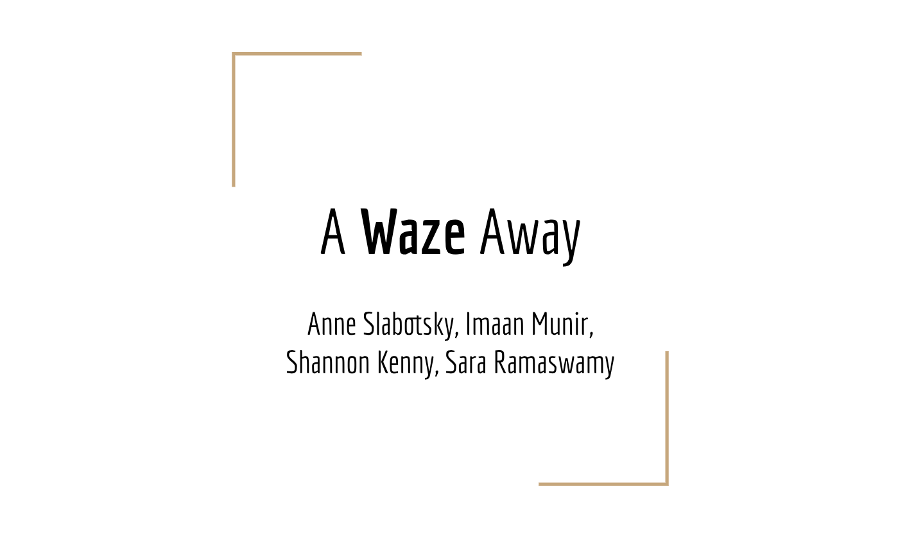
- My team analyzed Waze, a crowdsourcing navigation app that finds you the quickest driving route
- Topics covered: thumb zone, salience, non intuitive icons, divided attention, feedback, discovery & affordances, information scent, backup avoidance, goal state, and gamification
- We assessed these topics in terms of the problem and its implications, and then provided possible solutions
SI 388 Design Project: Rapid Prototyping
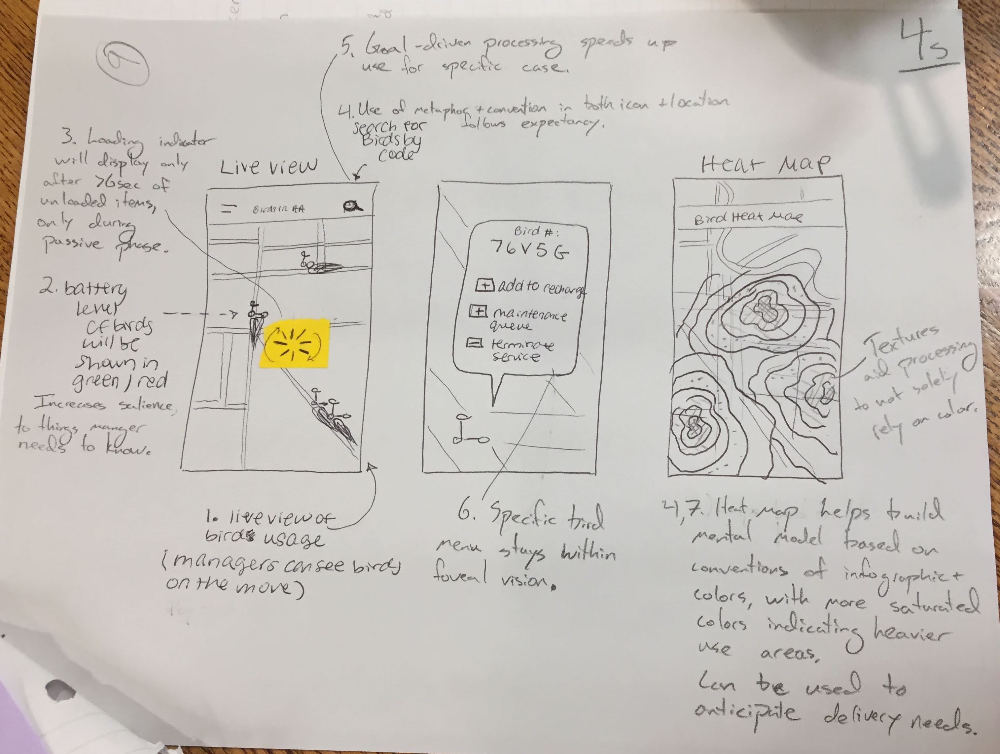
- I worked with a team for 15 minutes to quickly design elements of a map application using UX principles and heuristics
- We discussed attention capture, foveal vision, pop-out effects, metaphor, convention, salience, goal-oriented search, bottom-up vs top-down processing, and visual texture
- We developed sketches for various aspects of the app and connected specific design elements to the principles behind it
UMSI Design Jam
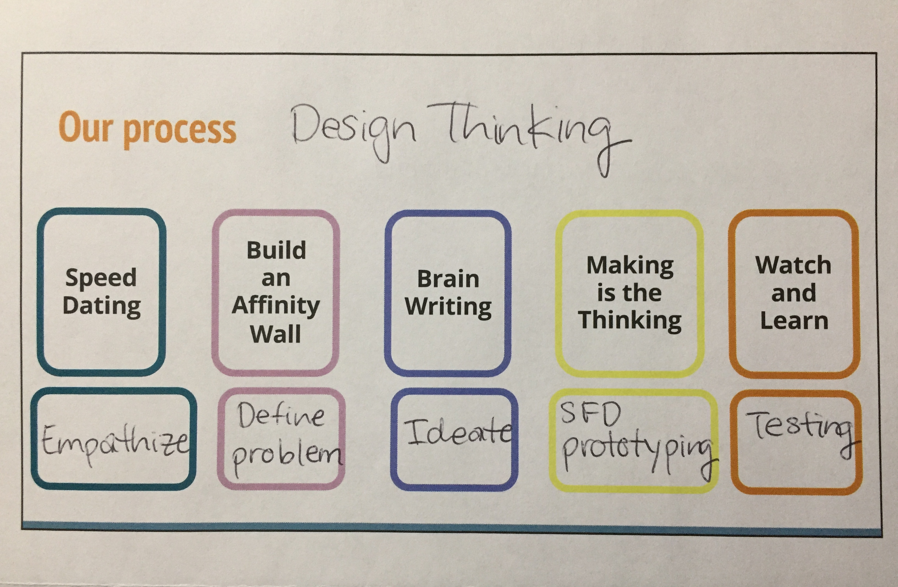
- I worked in a team of 3 people for 2 hrs to design an app that could connect people on campus by their interests
- We went through the design process starting with brainstorming and ideating to identify the basic concepts we wanted to incorporate
- We eventually developed sketches and fit elements of the application into the information architecture
photography
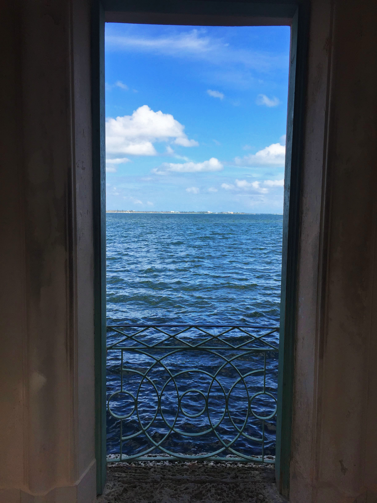
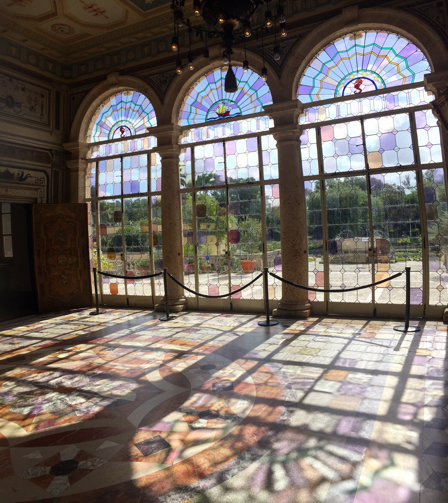
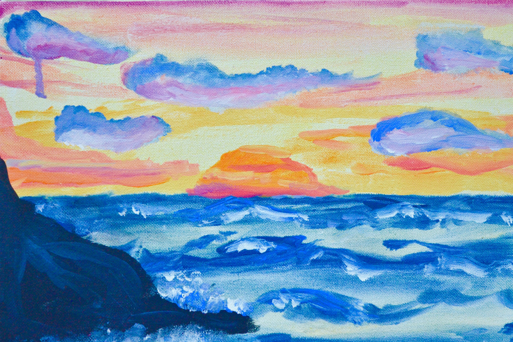
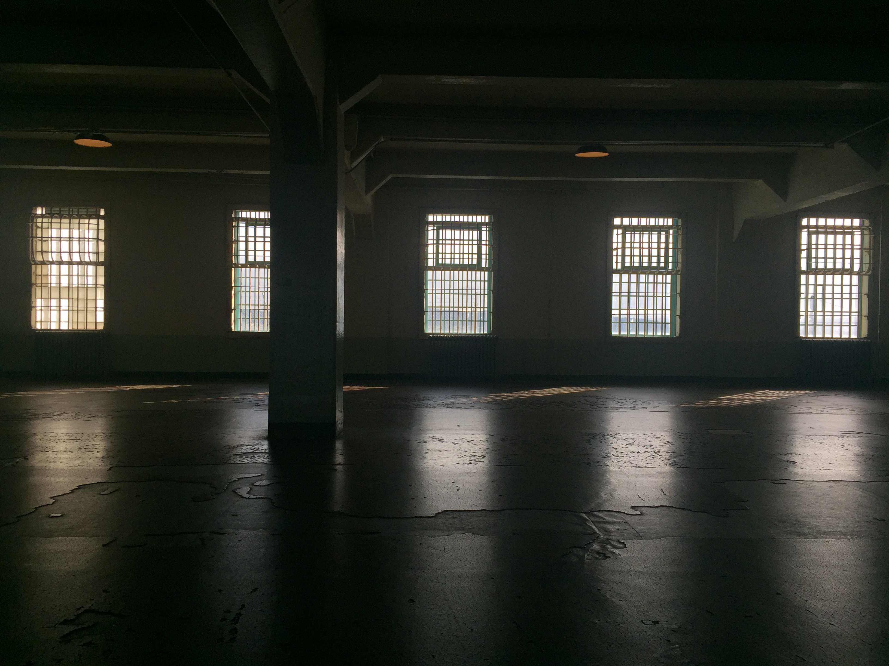
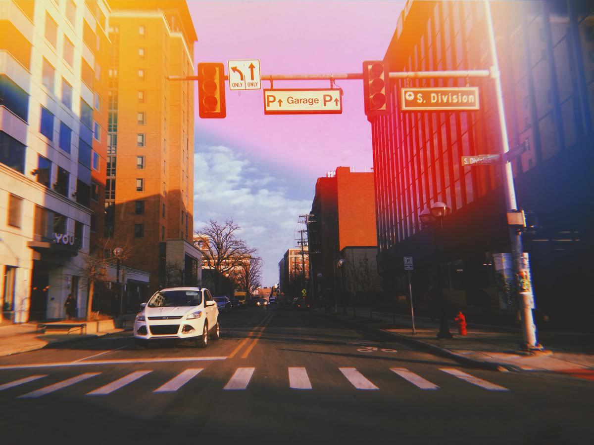
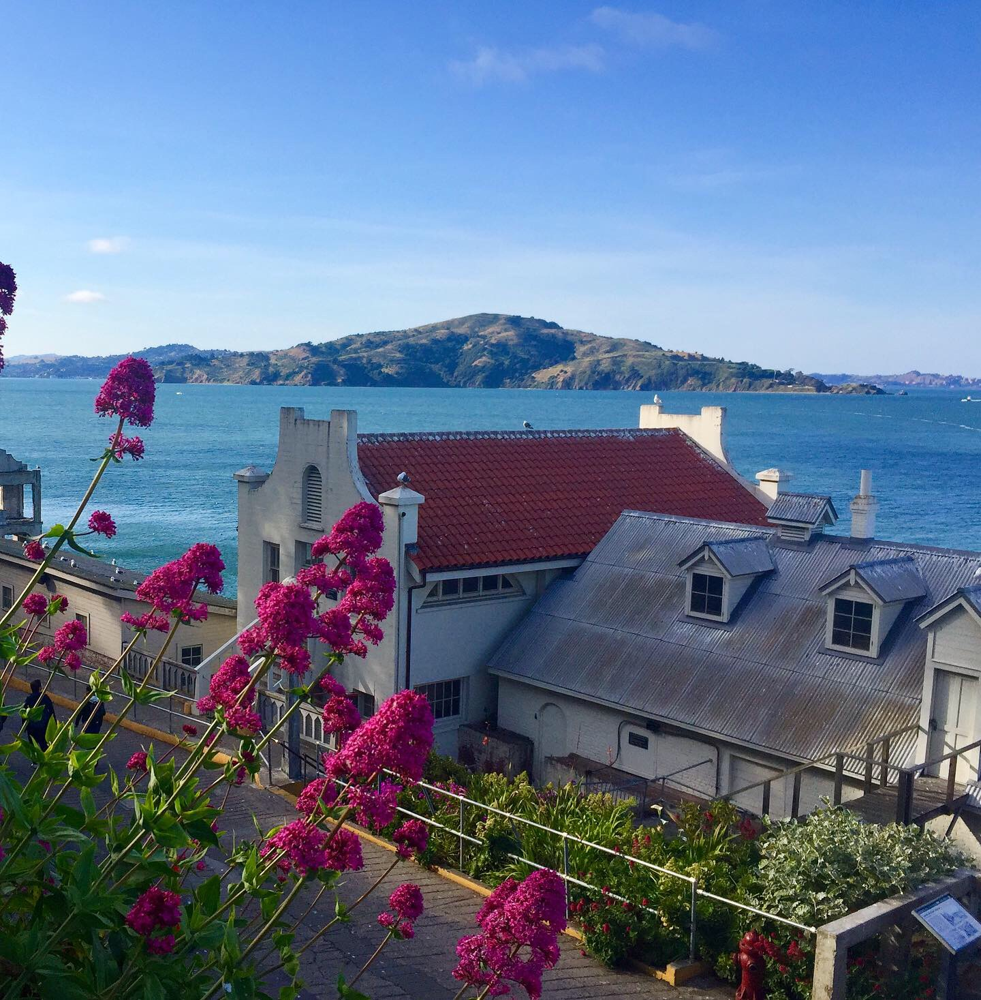
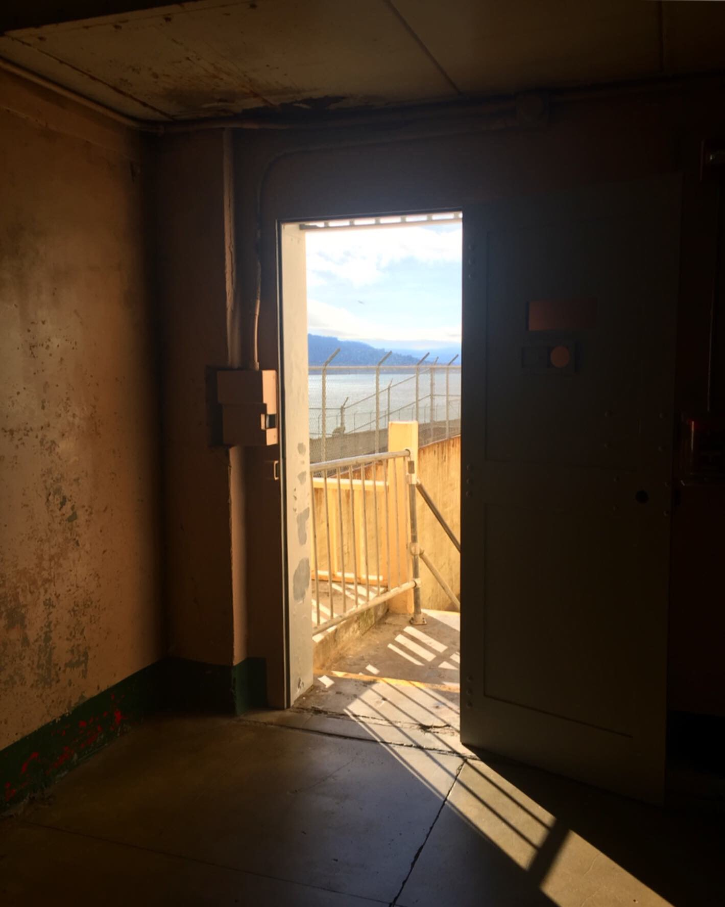
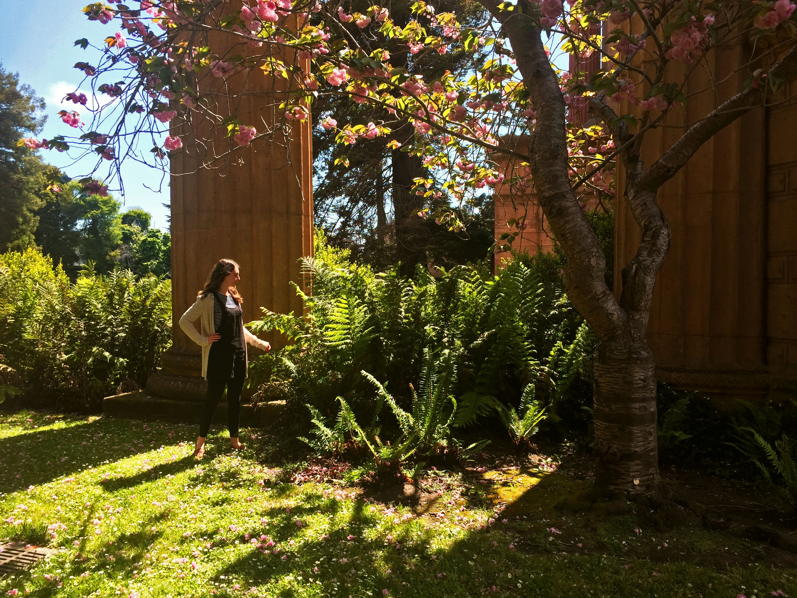